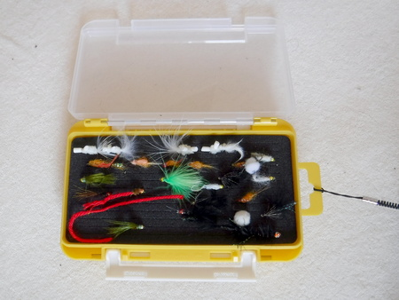

私のお気に入り
ニンフ・ストリーマー用フライケース MEIHO ランガンケース 1010W-2
2021/11/23
またまた会社帰りに釣具屋に行き、何気なく収納ケースの陳列棚を眺めていて発見したのがこの、MEIHO 製 ランガンケース 1010W-2ケース。

ニンフをいくつか入れたところ
明邦化学工業株式会社の製品です。ケース両面のウレタンフォームに狭い間隔でスリットが切ってあり、ニンフやストリーマーが多数収納できます。フタは半透明で、中身が見えるようになっています。同社の製品はありがたいことに、穴あきのタブが付いているので、そこに落下防止用のストラップ（ダイソーで購入）を結び、ベストやチェストバッグに結わえることができます。サイズは 175×105×38mm です。黄色のボディがよく目立つので、万が一落としても見つけやすいと思います。
ただ、ドライフライやテンカラ毛バリなど、ハックルの立ったフライを収納するのには向いていません。ハックルが倒れたり、つぶれて役に立たなくなってしまいます。
でも、小型のニンフならば、驚くほどの数を収納できるので、たいていの釣り場なら、これ１つで間に合うでしょう。
私のお気に入り 目次へ
サイトマップ
ホームへ
お問い合わせ